$$qf_commondoc_header.start$$ $$qf_commondoc_header.end$$
$$warning:You should use a 64-bit version of QF3 for this tutorial, since the image series are relatively large and require accordingly a lot of memory, especially during the processing steps!!!$$
Tutorial
Data & Introduction
$$startbox_note$$
The data for this tutorial is available from http://www.dkfz.de/Macromol/quickfit/examples.html as beads_flow_2013_08_15.zip.
$$endbox$$
In this tutorial, we will evaluate a measurement of TetraSpec multi-colored fluorescent beads diluted in water. Due to a temperature gradient over the sample, a directed flow field formed withing the field-of-view of a SPIM lightsheet microscope (pixel-size: a=400nm, lateral PSF-size wxy=600nm, longitudinal PSF-size wz=1240nm). An image-series with a temporal resolution of $(\Delta t_{frame}=530\;\mathrm{{\mu}s})$ and 150000 frames was acquired of this sample and is available in the ZIP-file, referenced above. A second image series was acquired on the same beads, but without flow. We will use a global imFCCS fit to determine the speed and direction of the particle flow. Here is a first long-time exposure of the sample, in which the flowing particles appear as horizontal stripes. Especially prominent is a bright aggregate, which appears in white:

The cross-correlation curve to a neighbor can reveil some properties of particle flow, since the cross-correlation function in flow direction has a peak at the time $(\tau_f=\delta_x / v)$, defined by the distance between the cross-correlated pixels $(\delta_x)$ and the flow velocity $(v)$:
 The flow direction is accessible, if cross-correlations in two perpendicular directions are measured and evaluated.
The flow direction is accessible, if cross-correlations in two perpendicular directions are measured and evaluated.
From each pixel in the measurement of the sample, we can obtain an autocorrelation curve and four cross-correlation curves to the four direct neighbor pixels (pixel-size/distance a=400nm):
 Then we fit five model functions to these five curves and in these link the components of the flow velocity $(\vec{v}=(v_x,v_y)^T)$ and the diffusion coefficients.
Then we fit five model functions to these five curves and in these link the components of the flow velocity $(\vec{v}=(v_x,v_y)^T)$ and the diffusion coefficients.
A detailed evaluation of this dataset, including a comparison to the results of some image-flow estimation algorithms can be found in $$jankrieger_phdthesis_ref$$.
Downlaod & unzip data
First go to the internet adress http://www.dkfz.de/Macromol/quickfit/examples.html mentioned above and download the file beads_flow_2013_08_15.zip. Unzip its contents to an empty directory on your hard-disk.
If you want to, you can inspect the downloaded dataset, using a scientific image viewer/editor, such as FIJI (http://www.fiji.sc/). The ZIP-file contains several TIFF-files, that were acquired during the measurement. The file beads_flow__s01_c08_000.tif contains the main measurement and beads_flow__s01_c08_000_background.tif is a short sequence of the image sensor dark-signal, acquired with the same acquisition settings, but without illumination. the remaining TIFF-files contain overview images acquired before and after the actual acquisition. The other files contain the setup of the microscope. These are available, if data is acquired with the plugin ext_spimb040 Help and can be read in by the correlator to already determine some meta-data. if these are not available, make sure to know the meta-data of your acquisition (rame-time/frame-rate, pixel-size, ...) before you proceed.
Correlate Data
- Now we have to correlate the dataset to yield the auto- and cross-correlation curves. To do so, start a new QuickFit project and start the imFCS correlator by clicking on the menu entry Data Items | Insert Raw Data | imFCS: imaging FCS | correlate images and insert. the following correlation dialog will appear:

- In this dialog, click on
 , select the import filer TinyTIFF and select the file beads_flow__s01_c08_000.tif from the directory, in which you extracted the ZIP file.
, select the import filer TinyTIFF and select the file beads_flow__s01_c08_000.tif from the directory, in which you extracted the ZIP file.
 After a click on OK, the correlator dialog will be enabled and some meta-data of the image is already displayed (frames, image size, ...) $$note:Make sure to select the filename-filter TinyTIFF, since only this importer can read the full set of 150000 frames from teh file. the importer libTIFF would only read around 60000 frames!$$
After a click on OK, the correlator dialog will be enabled and some meta-data of the image is already displayed (frames, image size, ...) $$note:Make sure to select the filename-filter TinyTIFF, since only this importer can read the full set of 150000 frames from teh file. the importer libTIFF would only read around 60000 frames!$$
- Add the remaining meta-data, which is NOT YET supplied in the correlator window:
- camera description/pixel-size: 400*400 nm²
- frame timing/frame-time: 530µs
- The other settings in this dialog should be:
- frame range: first-last
- no cropping
- no binning
- select the file beads_flow__s01_c08_000_background.tif as background file
- no bleach correction: This measurement was taken on fluorescent microspheres, which do not show any bleaching in the given imaging conditions.
- no DualView mode
- cut up into 5 segments, which will create 5 segments from the input dataset (30000 frames each). Each segment is correlated independently and finally we get an average and standard deviation over these five segments as a result. This allows for a proper weighting of the fits, using this standard deviation as an estimation of the error, that we make, when calculating correlation functions.
- correlator: Direct correlation with averaging, P=16, m=2 and choose a value for S, so the maximum lag-time τmax is a little bit larger than the segment length in seconds
- no N&B records
- Finally we have to choose the correlation functions, that should be calculated. Enable:
- ACF for each pixel
- CCF to distant pixels and enter the sequence $$example:-1,0;1,0;0,-1;0,1$$. In this sequence each pair of integers (separated by ',') specifies one shift vector $(\delta_x,\delta_y)$ for a cross-correlation function. E.g. -1,0 cross-correlates each pixel with its left direct neighbor. You can specify several different CCFs, that will all be calculated for the datset, by separating the shift vectors by ';'. Therefore the given sequence will cross-correlate each pixel to its left;right;lower;upper neighbor.
- Finally the dialog should look like this:

- Now you can start the correlation job, by clicking Add Job.
- While the correlation is running, you should also correlate the second datafile TetraSpec__s01_c08_000.tif (background: TetraSpec__s01_c08_000_background.tif), which contains a measurement of the same beads, but without flow. So click on and select teh file TetraSpec__s01_c08_000.tif. Then you set all other fields as above. Finally you can also add this job by clicking Add Job.
- When all two jobs are finished (
 ), the you can Close the dialog. QuickFit will now load the datasets into the project:
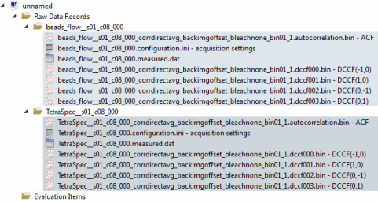
$$note:All RDRs (one ACF and the four CCFs, here called DCCF(Δx,Δy) ), that were created from one input dataset are grouped together (same background color/same folder)! This is necessary for QuickFit to recognize RDRs/files, that belong together. The roles (after the dash in the RDR name) specify, what type of correlation is in the record.
), the you can Close the dialog. QuickFit will now load the datasets into the project:
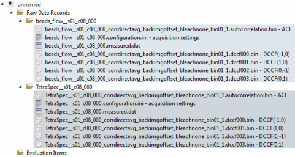
$$note:All RDRs (one ACF and the four CCFs, here called DCCF(Δx,Δy) ), that were created from one input dataset are grouped together (same background color/same folder)! This is necessary for QuickFit to recognize RDRs/files, that belong together. The roles (after the dash in the RDR name) specify, what type of correlation is in the record.
If this grouping should not be done automatically yet, you can edit the groups, best using the tool Tools | Project Tools | edit groups, roles and folders.$$
Inspecting the data
You can inspect the single correlation curves, by double-clicking a record.
- First double-click the beads_flow... - ACF record and change over to the tab Parameter Image:
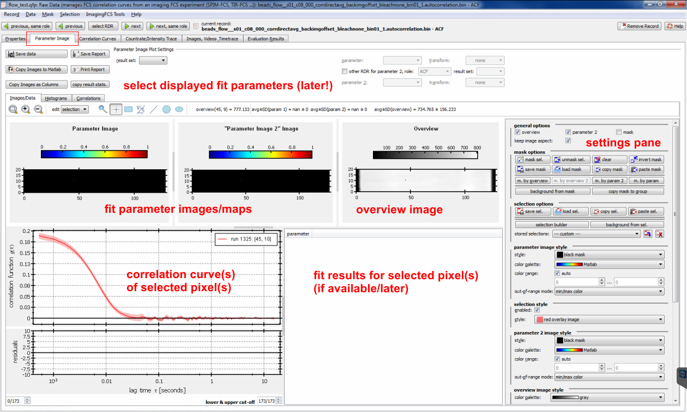
- In the settings pane on the rhs of the dialog, you can scroll down, until you see the correlation plot styles. Select the selection display: DCCF display, which will cause QuickFit to not only display the ACF in the plot at the lower left, but all five correlation curves from the RDRs in the group of the current RDR (i.e. the ACF + the four CCFs). After clicking on any bright pixel in the overview image, the plot should then look comparable to the following screenshot:
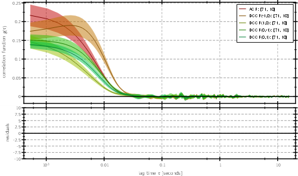
As expected for a sample with a directed flow, some CCFs show a distinct peak. It is at approximately $(\tau_f=0.003\;\mathrm{s})$. Together with the known pixel size of a=400nm, we can then already estimate a flow velocity of $[ v=\frac{a}{\tau_f} \approx 133\;\mathrm{\frac{{\mu}m}{s}} ]$
The fact, that this peak only appears in one of the four CCFs and that the two CCFs with shifts in y-direction, indicates, that the flow is mainly in x-direction.
- If you change over to the record TetraSpec... - ACF, which was taken of a sample without directed flow, you see the peak disappearing:
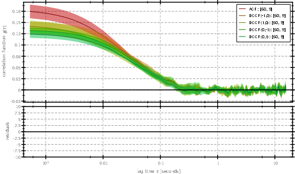
To change over to that record, you can use the select RDR button at the top of the window. After a click, a list will pop up, in which to select the file, that you want to display now:
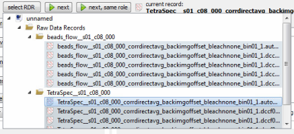
Masking the data
As you maybe noted during the last step, the overview image shows two distinct dark regions at its borders. These are caused by some optical elements in the beampath of the microscope. If you select a pixel in these regions, you woin't get any meaningful correlation data, since no fluorescence was detected there:
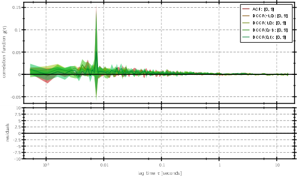
So we will have to mask these regions. This is possible in the imagingFCS RDR editor, that we already opened in the last step:
- Select the rectangle selection tool
 above the image plots and draw a rectangle over the left strip: Drawing starts, when you press down the left mouse button. Then you can draw the rectangle by keeping the left mouse button pressed and moving the mouse. When you release the button, the rectangle will be drawn.
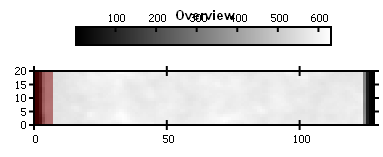
$$note:We now selected a few pixels on the left of the overview image, which are marked with a red overlay. the correlation plot will display the averaged ACFs/CCFs over all selected pixels.
above the image plots and draw a rectangle over the left strip: Drawing starts, when you press down the left mouse button. Then you can draw the rectangle by keeping the left mouse button pressed and moving the mouse. When you release the button, the rectangle will be drawn.
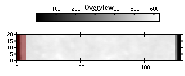
$$note:We now selected a few pixels on the left of the overview image, which are marked with a red overlay. the correlation plot will display the averaged ACFs/CCFs over all selected pixels.
These pixels are not masked yet!!!$$
- Now do the same for the rhs strip of dark pixels, but keep the key CTRL pressed, while drawing the second rectangle. This will add the new rectangle to the already existing mask.
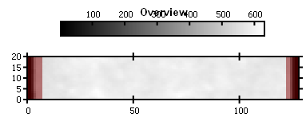
- Now scroll the settings pane on the rhs of the dialog up and press the button mask sel., which will mask the selected pixels. The mask will be shown as a blue overlay and the colobar-scalig will change to only include the pixels, that are non-masked:
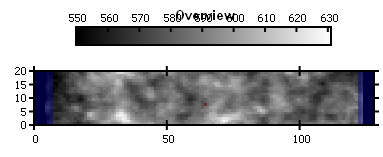
- This mask is now set for the ACF record only, but we also need this very same mask to be set for the four CCF records within the group. This can be achieved by the button copy mask to group on the rhs.
- Now repeat the steps above for the second ACF record.
$$startbox_note$$
Instead of drawing a mask by hand, you can also create the mask by segmenting the overview image. This is done by pressing the button m. by overview. This tool is especially helpful, if the shape of the imaged object (e.g. a cell) is irregular.
$$endbox$$
Finally we can also use the masked-out pixels to estimate the background intensity during the acquisition. This intensity is often a bit higher, than the one measured without illumination, which is already corrected for during the correlation step.
To estimate this background intensity, you will have to click on background from mask for one record in every group in your project. QuickFit will then ask you, whether you want to apply this operation to the other records in the group. Answer this with Yes.
Finally you can close the imagingFCS RDR editor window.
Adding & Setting up the fit
Now we have prepared the records for fitting. So we have to add a fitting object to the project and set it up for fitting the ACf and the four CCFs with linked parameters:
- In the main window, click on Data Items | Insert Evaluation | imFCCS Curve fitting. One evaluation object will appear in the project.
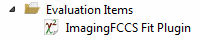
- Double-click the evaluation item to open the fit evaluation editor dialog:
 As you can see in this dialog, only a single correlation curve is displayed (it should be the first RDR in the project, most probably beads_flow... - ACF. Next to the correlation curve, you see the overview image with the mask, that we defined before. In this overview image, you can click on any pixel to inspect the curves/fit results there. For now click on the button avg. avoe the overview image, which will switch to an average correlation curve over all non-masked pixels in the image.
As you can see in this dialog, only a single correlation curve is displayed (it should be the first RDR in the project, most probably beads_flow... - ACF. Next to the correlation curve, you see the overview image with the mask, that we defined before. In this overview image, you can click on any pixel to inspect the curves/fit results there. For now click on the button avg. avoe the overview image, which will switch to an average correlation curve over all non-masked pixels in the image.
- Now we have to set up the fit. This can either be done by hand, or with a short-cut in the Tools menu. Here we will choose the short-cut. So click on Tools | configure for SPIM-FCCS ... | 3D diffusion+flow, ACF, 4 neighbors.
the dialog will change its appearance: The correlation curves plot will display the full five curves and the table at the bottom will contain a large set of columns:
The table contains a group of 5 columns (value/error/unit/fix/global) for every file/RDR in the fit. The first row of the table contains the RDRs, that are currently selected. These should all be beads_flow... records, and all fie different roles. In the second row, you can see the selected fit model, which is $$fitfunction:name:fccs_spim_diffflowce2$$ in our case. This model described the cross-correlation between two separated volumes (distance vector $((d_x, d_y)^\mathrm{T})$, taking flow (vector: $(\vec{v}=(v_x, v_y)^\mathrm{T})$) and diffusion (coefficient: $(D)$) into account. With $((d_x, d_y)^\mathrm{T}=(0,0))$ This model also incorporates the autocorrelation, so we can use the same model for all five roles!
The remaining rows show the different parameters of the chosen model: The value column contains the current parameter value, the error column the fit error associated with it (currently: all 0). The unit column displays the unit of the parameter (e.g. nm for the shift vector components) and in the fix column, you can fix a parameter to a specific value (so it's no longer a fit parameter). SOme parameters have a light grey background. these cannot be edited and are parameters, that are calculated form other parameters.
Also observe, that some parameters are already preset, such as the shift vectors $(d_x, d_y)$, which are set to the correct pixel-separation. The same is true for the pixel size $(a)$. The values are taken from the meta-data, that you provided, when correlating the record. If the pixel size is wrong, you can set a new pixel-size in the "properties" tab of the RDR editor of each record. The property is called "PIXEL_WIDTH" and "PIXEL_HEIGHT".
The last column global, specifies, which parameters are linked over the different RDRs/models: Initially each parameter is specific to each RDR, e.g. there is one separate $(G_\infty)$ for every RDR/correlation curve.
References
$$references$$